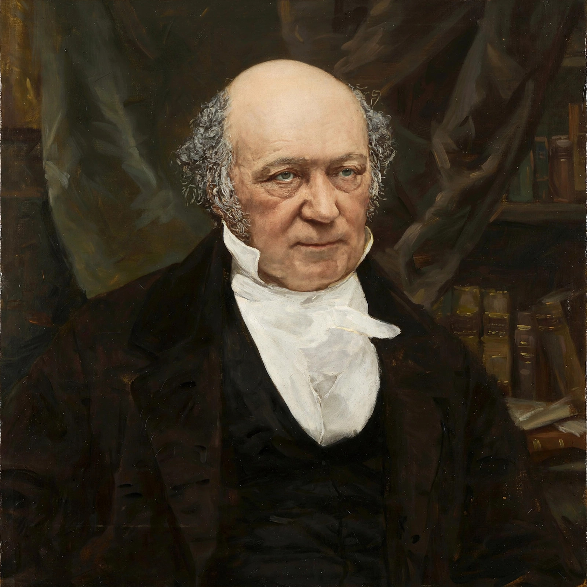

| Born | 4 August 1805, Dublin, Ireland |
|---|---|
| Died | 2 September 1865 (aged 60), Dublin |
| Fields | Physics, mathematics, astronomy |
| Known for | Quaternions, Hamiltonian mechanics, Hamilton's principle |
Sir William Rowan Hamilton (4 August 1805 – 2 September 1865) was an Irish mathematician, physicist and astronomer. He made major contributions to optics, classical mechanics and algebra, and is regarded as one of the greatest scientists of Ireland. A child prodigy in languages and mathematics, he became Andrews Professor of Astronomy at Trinity College Dublin and Astronomer Royal of Ireland while still an undergraduate, aged 21.
In the 1830s Hamilton reformulated Newtonian mechanics in what is now called Hamiltonian mechanics: dynamics expressed through a single function, the Hamiltonian, and canonical equations of motion, governed by Hamilton's principle of least (stationary) action. His unified mathematical treatment of optics and mechanics, including the prediction of conical refraction (confirmed experimentally), laid foundations later essential to quantum mechanics, where the Hamiltonian operator bears his name.
Hamilton spent years seeking an algebra of "triplets" to extend complex numbers to three dimensions, and on 16 October 1843, walking along the Royal Canal in Dublin with his wife, he realised the solution required four dimensions: the quaternions, with units obeying i² = j² = k² = ijk = −1. He famously carved the formula into the stone of Brougham (Broome) Bridge, where a plaque now commemorates the insight. Quaternions later found wide use in computer graphics, robotics and spacecraft attitude control. Hamilton died in Dublin in 1865, following a severe attack of gout after years of overwork and heavy drinking.